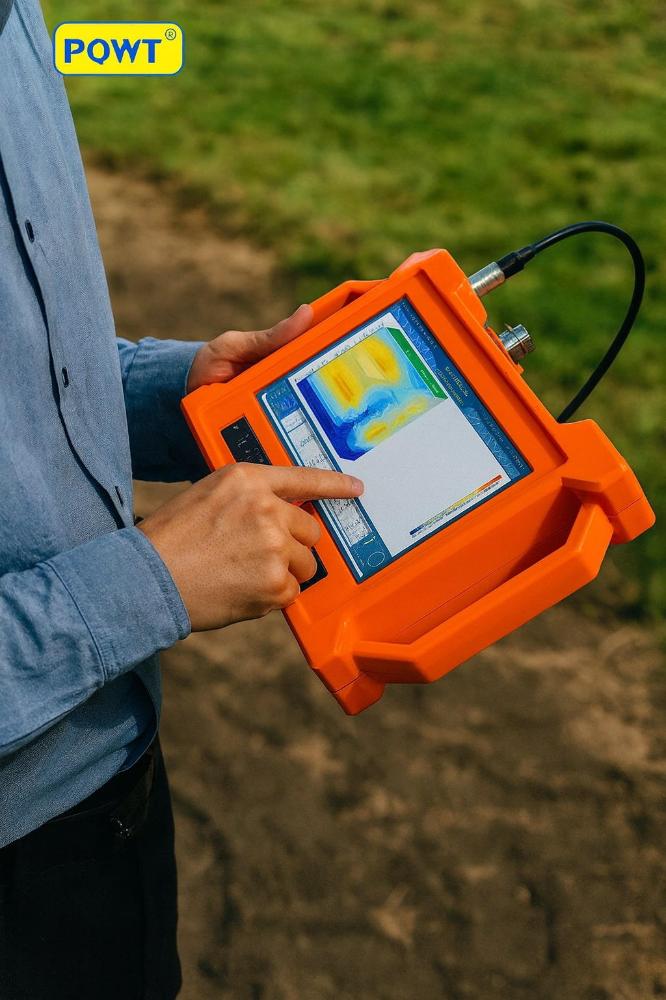
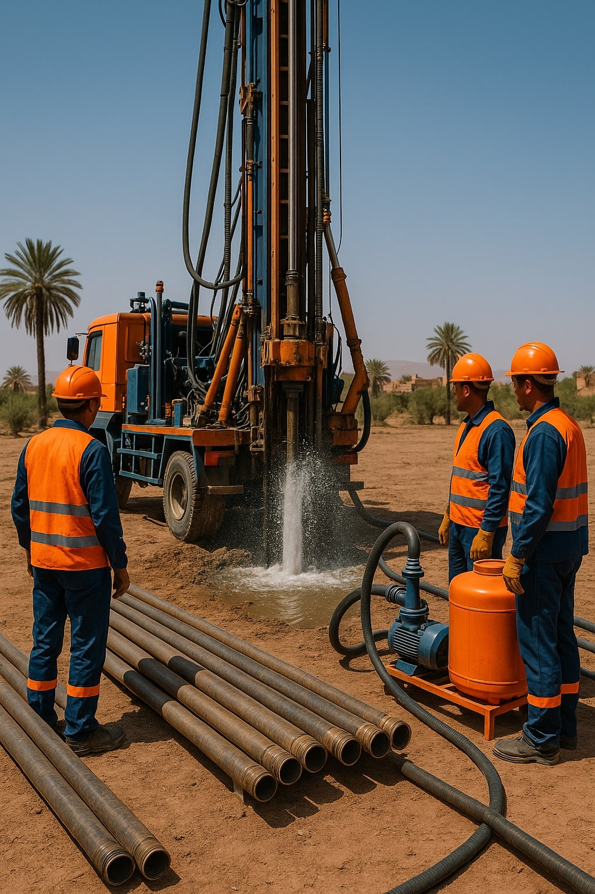
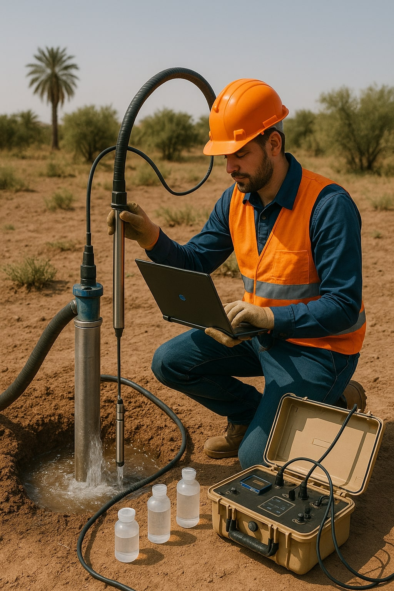
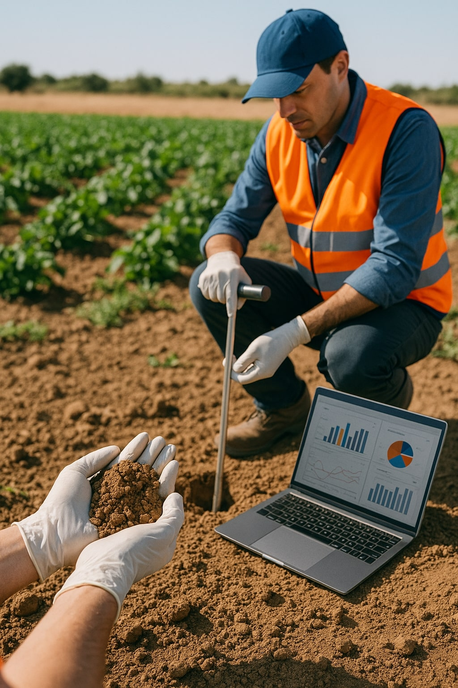

Des solutions complètes pour vos besoins en eau et en analyse des sols
IGS dispose de toutes les ressources et connaissances nécessaires pour trouver de l'eau sur votre propriété et élaborer un plan d'extraction adapté à vos besoins.


Nous proposons une gamme complète de services pour tous vos projets de puits et forages.
Nos experts réalisent des études complètes pour caractériser vos ressources en eau souterraine.


IGS est spécialisée dans l'analyse complète des sols agricoles pour optimiser vos rendements.